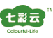

专注于为消费者提供新鲜健康的优质乳品，
在“新鲜战略”的指引下，打造亲近品牌，
提供更多创新产品。新希望乳业控股有限公司是新希望集团旗下成员企业，作
为中国领先的大型综合乳制品供应商，在中国西南、华
东、华北、华中拥有12家乳品企业，其中有4家国家级农业
产业化重点龙头企业，8家省级龙头企业。12家乳品企业构
建了以“新鲜”为企业核心价值理念的城市型乳企联合
体，专注于为消费者提供新鲜健康的优质乳品。公司还组
建有贸易公司、销售公司、营养品公司、牧业公司。
-
新鲜的奶源
新希望乳业在全国拥有20余个奶
源基地，将奶源半径严格控制在
100公里-150公里范围内；12
个直属牧场，每个牧场都建在当地
生态环境绝佳的地点-四川洪雅牧
场、杭州千岛湖牧场、大理石林
牧场等，从源头确保奶制品质量
安全；年收奶量超过40万吨。
-
安全的生产
新希望乳业一直严格执行“中国
好鲜奶十大标准”，通过DHI管
理系统，有效地保证了饲料和牛
奶的质量安全；密封的加工工
程，严格规范的工作人员准则，
保证了鲜奶的优质、安全。
-
创新的产品
近年来通过产品创新迭代，新希
望乳业在行业中不断创造佳绩，
书写传奇。打造了全球第一支只
卖当天的鲜奶，中国第一款新鲜
干酪，风靡全国的风味牛奶，以
及复古潮品城市记忆等具有影响
力的创新产品。
-
亲近的品牌
在“打造中国鲜奶第一品牌”愿
景的驱动下，旗下的四川华西、
阳坪乳业、昆明雪兰乳业、云南
蝶泉乳业、青岛琴牌乳业、杭州
双峰乳业、安徽白帝乳业、河北
天香乳业等品牌已是当地消费者
的首选品牌，成为区域市场的领
导者。
-
行业的贡献
作为中国奶业协会和中国乳制品
工业协会副理会长单位、中国西
部乳业发展协作会会长单位，新
希望乳业将进一步优化产品结
构，提升产品质量，发展巴氏鲜
奶，构建“新鲜”朋友圈，引领
了乳业的产品升级、契合国内消
费升级的大势。
新鲜战略

"鲜"牛奶

"鲜"牧场

"鲜"科技

"鲜"供应

"鲜"体验
快一点 faster
强化鲜半径
完善鲜链条少一点 less
重回天然，
回归纯、真、鲜近一点 closer
工厂到牧场距离
100-150公里
-
我们希望，在未来，可以通过我们的努力，
为中国消费者
不断创造真正高品质的乳品
不断践行我们的社会责任
从点点滴滴做起
共同发展健康奶源、共同提高生产水准、
共同维护产品安全，真正实现让更多人
喝好奶，多喝奶，更放心的地喝奶！
实体分布


- 

旗下品牌
点击访问官网
明星产品

24小时
中国第一款以时间定义的好鲜奶，从生
产到售卖只有24小时。24小时作为新
鲜高度的代表之作，5年来一直坚持对
新鲜高要求。新鲜限定升级聚焦“限
时、限量、现卖”，优选牧场奶源，从
生产到消费者手中层层设限，只为更
鲜，为消费者提供最高品质的鲜奶。
轻爱
轻爱，国内首款轻酸奶。轻口感更畅
爽、0添加更轻松、专利菌种焕轻新。
新希望乳业为Synbio100意大利专利菌
种在国内唯一一家授权使用乳制品企
业。品牌诉求“轻”的态度生活，
slogan“活，该轻一点”。让一切烦恼
归零，感受轻盈无负担。轻爱冠名
2016年李荣浩【有理想】全球巡回演
唱会（10场）。
活润
纯鲜奶发酵，特别添加HORUN菌群，
由原产美国的专利菌种组成，专业肠道
呵护，让身体更加舒畅。活润提倡“活
的滋润”健康生活状态，秉承年轻、时
尚、活力，以“跑”做为沟通载体，倡
导年轻生活RUN起来。
味蕾游记
中国第一款新鲜干酪，甄选生态牧场的
优质奶源，每一滴牛奶新鲜、纯净。遵
循古老的传统发酵工艺，经过14道精湛
工序，精心打磨而成，以保证新鲜干酪
口味醇厚、营养丰富。甄选全球各地的
优质原材料，来自丹麦的菌种、波兰的
葡萄干和坚果等全球食材与奶酪完美融
合，畅享惊艳口感，体验舌尖的异域风
情。
城市记忆
城市记忆首款不添加添加剂的酸奶产
品，产品采用传统工艺单罐发酵，回归
酸奶最本真的味道。坚持简单的包装
引领怀旧潮流，让小时候的玻璃瓶酸奶焕
发新的生命力，包装诠释着各城市独有
的记忆。城市记忆为文化酸奶复古潮
品。荣获尼尔森2015中国突破性创新
奖，也是唯一获此殊荣乳制品。
风味奶
新希望香蕉牛奶第一次将风靡韩国的香
蕉牛奶风潮引入中国，牛奶+香蕉果
酱，口感香醇，黄色包装风格引领牛奶
新时尚。2012年上市至今，一直秉
持“好吃、好玩、好时尚”的产品价值
观，为消费者带来时尚、好玩的风味牛
奶。
千岛湖牧场
千岛湖牧场位于北纬29度新安江千岛湖
畔，群山环绕绿树成荫，空气新鲜天然
氧吧，千岛湖牧场鲜牛奶从源头确保鲜
奶至臻品质、用工艺还原生态自然、0
添加尽享鲜奶自然本味、口感淳正新
鲜，极致山水定义好鲜奶
阿尔卑斯酸奶
采用意大利专利Synbio100益生菌菌株
自然发酵、自然零添加，千岛湖牧场生
态牧场保证优质奶源。